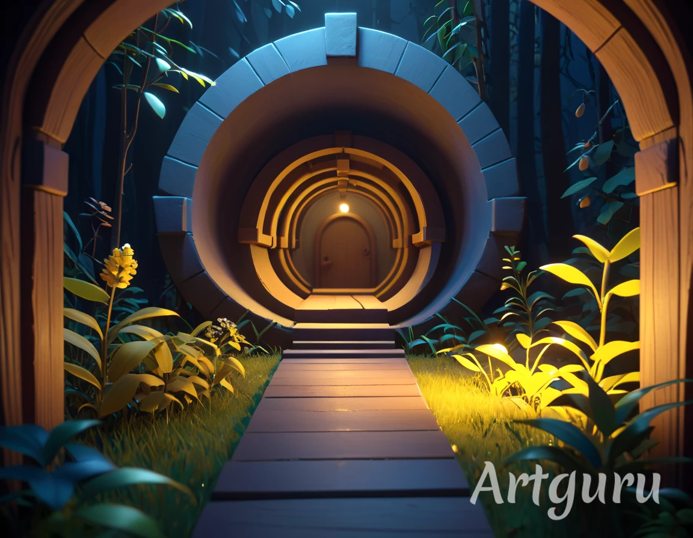

Você encontra um mapa antigo em um mercado de antiguidades. Ele parece indicar a localização de um artefato mágico perdido. A primeira decisão é sua: por onde começar?
Você parte para as montanhas e descobre uma caverna com inscrições antigas. Dentro, há dois caminhos.
Na floresta, você encontra um círculo de pedras antigas. Há um símbolo brilhando no chão.
O caminho iluminado leva você a uma sala cheia de cristais brilhantes. No centro, há uma mensagem.
No caminho escuro, você encontra uma armadilha. Infelizmente, sua jornada termina aqui.
Ao ativar o símbolo, você é transportado para um templo escondido no topo de uma montanha.
Você se perde na floresta e decide voltar para casa sem encontrar o artefato.
A mensagem indica que o artefato está no coração de um lago escondido. Você segue para lá.
Ao ignorar a mensagem, você perde a pista crucial e precisa retornar ao mapa inicial.
O templo guarda o artefato mágico. Parabéns, você completou sua jornada!
No coração do lago, você encontra o artefato mágico. Sua missão foi um sucesso!